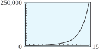

Subsection 3.4 Exponential Equations
An exponential equation is one in which the variable is part of an exponent. For example, the equation
is exponential.
Many exponential equations can be solved by writing both sides of the equation as powers with the same base. To solve the equation above, we write
which is true if and only if \(x = 4\text{.}\)
In general, if two equivalent powers have the same base, then their exponents must be equal also, as long as the base is not \(0\) or \(\pm 1\text{.}\)
Sometimes the laws of exponents can be used to express both sides of an equation as single powers of a common base.
Example 3.4.9.
Solve the following equations.
- \(\displaystyle 3^{x-2} = 9^3\)
- \(\displaystyle 27 \cdot 3^{-2x} = 9^{x+1}\)
- Using the fact that \(9 = 3^2\text{,}\) we write each side of the equation as a power of \(3\text{:}\)\begin{equation*} \begin{aligned}[t] 3^{x-2} \amp = \left(3^2\right)^3 \\ 3^{x-2} \amp = 3^6 \end{aligned} \end{equation*}Now we equate the exponents to obtain\begin{equation*} \begin{aligned}[t] x - 2 \amp = 6 \\ x \amp = 8 \end{aligned} \end{equation*}
- We write each factor as a power of \(3\text{.}\)\begin{equation*} 3^3 \cdot 3^{-2x} = \left(3^2\right)^{x+1} \end{equation*}We use the laws of exponents to simplify each side:\begin{equation*} 3^{3-2x} = 3^{2x+2} \end{equation*}Now we equate the exponents to obtain\begin{equation*} \begin{aligned}[t] 3 - 2x \amp = 2x + 2 \\ -4x =\amp -1 \end{aligned} \end{equation*}The solution is \(x = \dfrac{1}{4}\text{.}\)
Checkpoint 3.4.10.
Solve the equation \(~~2^{x+2} = 128\text{.}\)
Example 3.4.11.
During the summer a population of fleas doubles in number every \(5\) days. If a population starts with \(10\) fleas, how long will it be before there are \(10,240\) fleas?
Let \(P\) represent the number of fleas present after \(t\) days. The original population of \(10\) is multiplied by a factor of \(2\) every \(5\) days, or
We set \(P = \alert{10,240}\) and solve for \(t\text{:}\)
We equate the exponents to get \(10 = \dfrac{t}{5}\text{,}\) or \(t = 50\text{.}\) The population will grow to \(10,240\) fleas in \(50\) days.
Checkpoint 3.4.12.
During an advertising campaign in a large city, the makers of Chip-O’s corn chips estimate that the number of people who have heard of Chip-O’s increases by a factor of \(8\) every 4 days.
- If 100 people are given trial bags of Chip-O's to start the campaign, write a function, \(N(t)\text{,}\) for the number of people who have heard of Chip-O's after \(t\) days of advertising.
- Use your calculator to graph the function \(N(t)\) on the domain \(0 \le t \le 15\text{.}\)
- How many days should the makers run the campaign in order for Chip-O's to be familiar to \(51,200\) people? Use algebraic methods to find your answer and verify on your graph.
- \(\displaystyle N(t)=100 \cdot 8^{t/4}\)
- 
- 12 days
Technology 3.4.13. Graphical Solution of Exponential Equations.
It is not always so easy to express both sides of the equation as powers of the same base. In the following sections, we will develop more general methods for finding exact solutions to exponential equations. But we can use a graphing calculator to obtain approximate solutions.
Example 3.4.14.
Use the graph of \(y = 2^x\) to find an approximate solution to the equation \(2^x = 5\) accurate to the nearest hundredth.
Enter \(Y_1 = 2\) ^ X and use the standard graphing window (ZOOM 6) to obtain the graph shown in figure (a). We are looking for a point on this graph with \(y\)-coordinate \(5\text{.}\)
Using the TRACE feature, we see that the \(y\)-coordinates are too small when \(x \lt 2.1\) and too large when \(x \gt 2.4\text{.}\) The solution we want lies somewhere between \(x = 2.1\) and \(x = 2.4\text{,}\) but this approximation is not accurate enough.

To improve our approximation, we will use the intersect feature. Set \(Y_2 = 5\) and press GRAPH. The \(x\)-coordinate of the intersection point of the two graphs is the solution of the equation \(2^x = 5\) Activating the intersect command results in figure (b), and we see that, to the nearest hundredth, the solution is \(2.32\text{.}\)
We can verify that our estimate is reasonable by substituting into the equation:
We enter 2 ^ 2.32 ENTER to get \(4.993322196\text{.}\) This number is not equal to \(5\text{,}\) but it is close, so we believe that \(x = 2.32\) is a reasonable approximation to the solution of the equation \(2^x = 5\text{.}\)
Checkpoint 3.4.15.
Use the graph of \(y = 5^x\) to find an approximate solution to \(5^x = 285\text{,}\) accurate to two decimal places.
\(x \approx 3.51\)